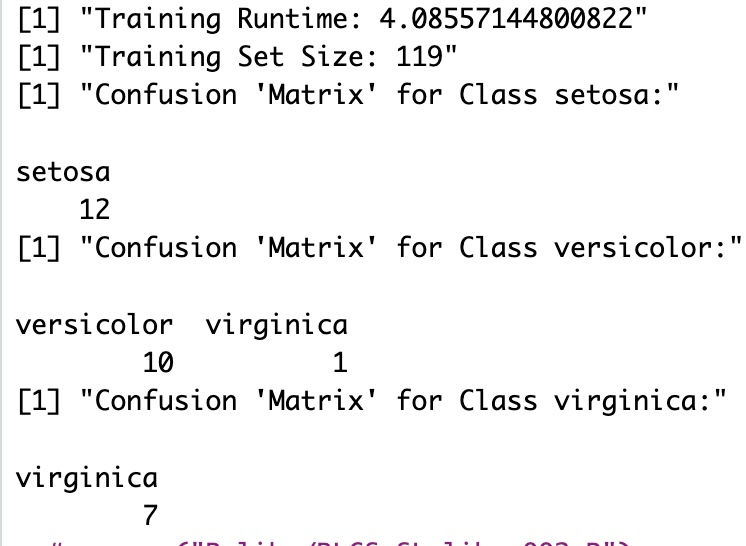

Practical considerations
“But you only take binary strings as input??”
I was in attending a local R conference the other day, and took the opportunity to discuss a bit with some of the (very few) that have an understanding of what I’m doing these days with the RLCS project.
It’s always great to talk with them, they know so much, there is so much experience in there. And of course, that means, they can criticize my work. Which, from them, or anyone with criteria for that matter, I happily welcome!
A short term, partial (but functional) solution
Alright, so far I’ve always taken examples where I could translate the problems into binary strings for the input.
For images, I took each pixel and set it to 1 if the pixel was “used” (say, a high shade of black), and 0 if it wasn’t (say, a light shade of grey). See https://kaizen-r.github.io/posts/2025-03-19_ExplainableAI/ for instance, for a visual intuition.
Other examples were specifically chosen to be already presenting binary “states”. That was the case with “not_bit_4” or “mux_6” here.
But it is very common to have numerical variables as input, not… Well, not simply binary ones.
That said, pause for a second: What is a binary string if not (often times) a numerical value, duly encoded? It’s quite straightforward, if you think about it. Say you want to use 4 bits, you can encode 16 values, say the natural numbers (0:15). So 0000 is 0, 0010 is 2, and 1111 is 15.
But let’s make a second pause: What if you have more values? Say 32 of them, from 0 to 31? And say, for the sake of example, that we want to limit the number of bits to be used still to 4 bits. Then we could decide to assume a loss of information, and if so, use 0000 as a state for actual values 0 and 1, and 1111 for actual values 30 and 31.
Why limit the number of bits, you ask? Well, because the way it is working currently, each added bit to the states increases the search space of the algorithm by a (multiplication) factor of 2. Which is to say, long binary strings as states are costly to process and depending on the problem, with lots of samples for training, for instance, would require a lot of time (Note: I’m not discussing here “a lot of processing power”, because as it is, paralelising is complex, although not impossible, and with varying efficacy depending on the scenarios). With few samples, or clear separation, for instance, the limitation of forcing a sequential processing can be overcome with nicely chosen hyperparameters. But it’s not straightforward. Anyhow, back to the topic.
Pause number 3: What if we had real-valued variables. Each variable then fits within its own range. I hereby suggest we could “break” it in buckets, so that each bucket can then in turn represent a subset of the chosen variable values, a range.
How to break that though? Choosing means kind of makes an assumption about the distribution (normality) of input variable. So for now, and without thinking much about it I prefer to use the median, and quartiles, thereby breaking the input in 4 buckets of similar (or almost identical) sizes. And then, why not, break each bucket in turn in 4 sub-buckets. Voilà: 16 subsets of the one variable. To be represented each as a 4 bits binary string.
And no, I haven’t given it much more thought. This is just a simplified approach, one which my statistician friends will surely criticize the next time I meet them… But the important thing is the conceptual approach: If you accept loss of information, there is nothing precluding you from encoding your real numbers input into binary strings!
Thereby, of course, making the algorithm more practical to use.
The tweak: Gray encoding
Final detail for today: While reading the book “Introduction to Learning Classifier Systems” (mentioned in the first post on the RLCS topic), they make a point about the binary encoding.
“Normal binary” encoding of numbers is not always “sequential” for consecutive numbers, in that the Hamming distance between 0011 and 0100 (3 and 4) is 2.
There are alternatives, and one that is proposed in the book is the Gray code. I won’t delve into the details, but suffice to say, I am not yet fully convinced it is a great approach, but there is some intuition to it that makes it probably better than traditional encoding.
Anyhow, I make a very very simplistic implementation of all I have discussed thus far today for the (in-)famous iris dataset. (Infamous in that, it’s almost too common :D But then again, that’s what makes it a perfect example!)
The Iris Classifier
So the iris dataset presents 4 real-valued variables, and 3 classes. Think of 16 buckets per variable, using quartiles and sub-quartiles. And a Gray code.
Can we make a Supervised Learning model using LCS? Sure we can!
This is what it looks like, with the state simply putting together 4 strings of 4 bits:

And what about the result?
Well, it’s a bit slow: 4’ for training. There are considerations about this, but overall, consider searching for solutions in a 16bits search space, where on top of everything else, classes are overlapping in different dimensions… But no excuse, and I haven’t continued tweaking hyperparameters for this particular example.
Anyhow. And what of the quality of the resulting LCS as a supervised learning classifier?
I take 80% of the samples for the training (119) samples, leaving only 30 samples for testing (it’s not a big dataset :D). And the results are like so:

That’s about it. Although…
Then again, other options are proposed in the book…
Could we accept numerical inputs?
Well, in fact, yes. There are alternatives, whereby instead of 0 or 1, you can take real numbers. The way this works (at least the way others have approached it and documented it in the reference book on the topic already mentioned) is like so:
each variable is “covered” separately by a wide or narrow numerical range
Coverage (creating new classifiers) would set a range around the variable value. Said range would replace our current bits in the state (bit strings).
upon calling the Genetic Algorithm, the mutation step can replace said ranges with either generalization (so, # as implemented otherwise), but also it could try to widen or narrow the range.
The above would allow to cover more or less ground per classifier, making them more or less specific. I feel this seems correct. But I do also believe the computational effort would potentially be higher (I haven’t thought it through either).
Also, we need to decide what “narrow” or “wide” signifies for each variable, for instance.
And of course, I would need to change the code to account for such inputs, which… I’m sorry, but I won’t do it for now. If someone some day shows a minimum of interest in the possibilities of the algorithm, I shall make sure I implement that.
Actually, I kinda know how to go about it. But there are many pieces of the algorithm, and functionally testing any change (in the functionality) is a slow process (in spite of having run several tests thus far…). Unit testing wouldn’t be so much of a problem.
Conclusions
It is true that “only” accepting binary input strings for the states (i.e. the input data, in our context) is a difficulty, for sure.
But consider that: Neural Networks accept numerical input. And people use them. This is slightly different, but not really if you look at it a certain way.
So yes, I should work on a future version that will accept numerical input, not just binary strings. Sure. Some day. Future version is the key here, there is only so much I can cover for now :)